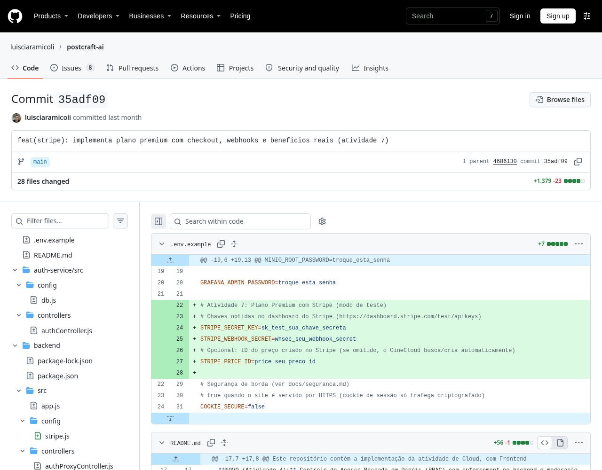
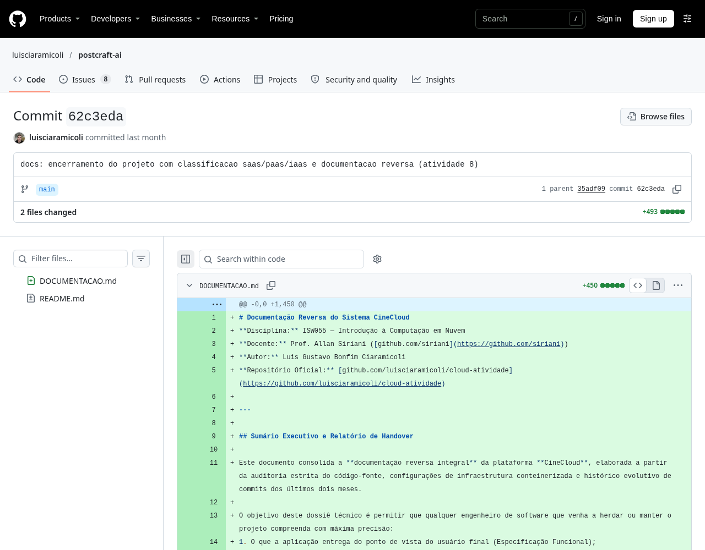
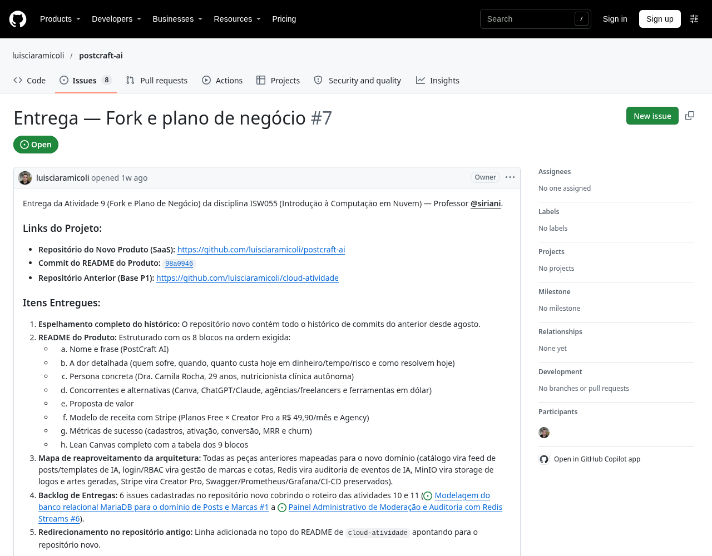
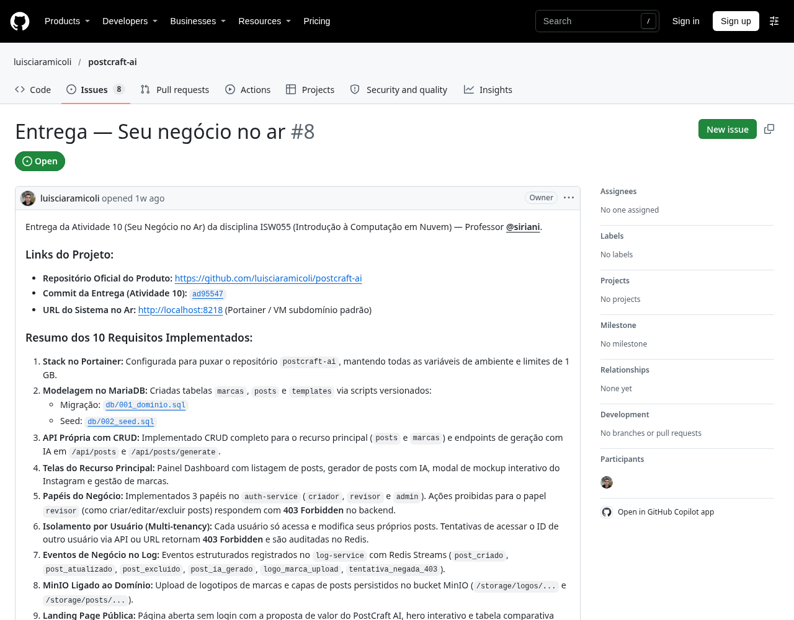

P2 — PostCraft AIP2 — Relatório consolidado
Fatec Pompeia · ISW055
Introdução à Computação em Nuvem
PostCraft AI
Luis Gustavo Bonfim Ciaramicoli
Turma: 161_SIST. INTELIGENTES_N
Professor: Allan Lincoln Rodrigues Siriani
12 de novembro de 2026
Repositório do produtoRelatório individual de arquitetura e atividades 7 a 11. Levantamento documental com limitações explicitadas; não constitui comprovação de implantação pública.
1 Introdução
O PostCraft AI é a evolução do catálogo CineCloud desenvolvido na disciplina Introdução à Computação em Nuvem. A base de autenticação, auditoria, armazenamento de arquivos e pagamento foi reaproveitada para um domínio de publicações e marcas. O público proposto são profissionais autônomos que precisam produzir conteúdo recorrente para o Instagram, mas dispõem de pouco tempo para organizar roteiros, legendas e identidade visual.
O produto propõe um plano gratuito e uma assinatura Creator Pro. A mudança de domínio exige mais que trocar telas: as permissões, o vínculo entre usuário e dados, a cobrança recorrente e os limites precisam ser verificáveis no servidor. Este relatório apresenta a arquitetura encontrada no repositório do produto, as evidências das atividades do bimestre e as lacunas que impedem afirmar que o SaaS está completo.
O recorte principal é o commit d084645, último commit do produto consultado. Há evolução posterior no repositório da base, incluindo Gemini e correções de interface, mas ela não é atribuída automaticamente ao produto publicado.
2 Metodologia
Foram consultados o enunciado da P2, o histórico Git, as issues de entrega, os arquivos Docker Compose, as rotas e controladores de backend, o esquema SQL e o pipeline de integração contínua. Uma cópia isolada do repositório do produto foi usada para produzir este documento, preservando alterações locais não commitadas em outro diretório.
As datas de implementação das atividades 7 e 8 vêm dos commits. Para 9 e 10, foram utilizadas as datas de abertura das issues de entrega, convertidas de UTC para UTC−03:00. O histórico anterior foi preservado na cópia do repositório, permitindo localizar os mesmos commits da base. Data de código ou issue não comprova, isoladamente, aprovação pelo professor nem funcionamento de todas as funções anunciadas.
As capturas de commits e issues são de páginas reais do GitHub; os registros textuais adjacentes preservam as datas exatas extraídas do Git. Imagens de checkout e assinatura já presentes na documentação são evidências históricas, não novos testes. Os testes locais de 12/11/2026 pertencem à versão mais recente da base e foram usados somente como diagnóstico complementar. Não foi fornecida uma URL pública verificável do produto.
A redação e a montagem do documento tiveram assistência de IA. Não foram criados registros fictícios de pagamento, aprovação, publicação ou entrega. A atividade 11 permanece identificada como não entregue neste levantamento.
3 Arquitetura do SaaS
3.1 Componentes e microsserviços
Navegador → domínio / proxy (publicação não verificada) → app:3000
app → auth-service → MariaDB externo
app → MariaDB · app → MinIO · app → Stripe Checkout
Stripe → webhook no app → MariaDB
app / auth → log-service → Redis Streams
Prometheus → métricas dos serviços → Grafana
O app reúne frontend compilado e API Express. O auth-service centraliza login, sessão e autorização. O log-service recebe eventos estruturados e os grava no Redis. O MariaDB mantém usuários e domínio; MinIO guarda objetos binários. Stripe é o serviço externo de cobrança. O Compose expõe a porta 8218 do app; auth, log e MinIO se comunicam por nomes de serviço na rede Docker. O banco é indicado por DB_HOST, não é definido como serviço nesses arquivos.
3.2 Onde roda
O Compose de produção referencia imagens GHCR postcraft-app, postcraft-auth e postcraft-log-service. A issue 8 declara uso de Portainer, mas informa apenas http://localhost:8218. Não há evidência suficiente de domínio público, identidade da VM ou nome da stack; esses dados precisam ser confirmados pelo autor. A stack observada localmente se chama cloud-atividade e executa uma versão posterior da base, não necessariamente a imagem do produto.
Os arquivos não definem limites de memória por container. Redis tem maxmemory de 256 MB, que limita sua memória de dados, não toda a stack. Portanto, a declaração de 1 GB feita na issue não foi tratada como configuração comprovada.
Variáveis relevantes, somente nomes: DB_HOST, DB_USER, DB_PASSWORD, DB_NAME, JWT_SECRET, AUTH_SERVICE_URL, LOG_SERVICE_URL, MINIO_ENDPOINT, MINIO_ACCESS_KEY, MINIO_SECRET_KEY, MINIO_BUCKET, STRIPE_SECRET_KEY, STRIPE_PRICE_ID, STRIPE_WEBHOOK_SECRET, SMTP_USER, SMTP_PASS, PUBLIC_URL, COOKIE_SECURE e CORS_ORIGINS. O Compose de produção contém defaults inseguros que devem ser substituídos; seus valores não são reproduzidos aqui.
3 Arquitetura — fluxos
3.3 Fluxo de uma requisição
Na criação de um post, o navegador envia a requisição à API na mesma origem. O middleware verifica a sessão e consulta o serviço de autorização para o papel exigido. O controlador valida os campos e associa o registro ao usuário autenticado. O MariaDB persiste o post e, quando aplicável, a marca. O serviço de logs registra o evento de negócio e a API retorna o resultado. Na listagem, usuários comuns recebem registros filtrados por usuario_id; o administrador tem caminho específico para consulta ampliada.
O endpoint de geração do produto no commit d084645 utiliza generateMockAIContent, uma composição heurística de textos. A integração real com Gemini está na evolução posterior da base. Ela não pode ser apresentada como capacidade já comprovada daquela versão do produto.
3.4 Fluxo de assinatura
O app cria uma Checkout Session em modo subscription com o preço configurado. A confirmação efetiva depende do webhook, não do retorno do navegador. O controlador valida a assinatura com constructEvent e STRIPE_WEBHOOK_SECRET sobre o corpo bruto. checkout.session.completed associa stripe_customer_id e stripe_subscription_id ao usuário e ativa premium; customer.subscription.deleted remove o benefício.
Não foi localizada rota de portal do cliente nem armazenamento de IDs de eventos para deduplicação. Repetir a atribuição premium=1 pode manter o mesmo valor, mas isso não constitui idempotência completa: eventos e efeitos secundários podem se repetir. Também não foi comprovado bloqueio mensal de três gerações no controlador do produto. A promessa comercial Free × Pro excede o que foi validado no código.
No diagnóstico local posterior, o checkout retornou erro de credencial OAuth expirada. Não houve assinatura de teste concluída neste levantamento. É necessário renovar a configuração, testar webhook, cancelamento, repetição de eventos e enforcement das cotas antes de considerar a atividade 11 concluída.
3 Arquitetura — dados e segurança
3.5 Modelo de dados do domínio
| Entidade | Chaves e finalidade |
|---|
| usuarios | id; nome, email, senha, role, bio, avatar_key, premium, stripe_customer_id, stripe_subscription_id. |
| marcas | id; usuario_id → usuarios.id (CASCADE); nome, nicho, paleta_cores, logo_url. |
| posts | id; usuario_id → usuarios.id (CASCADE); marca_id → marcas.id (SET NULL); titulo, nicho, formato, slides_json, legenda, hashtags, status, imagem_url. |
| templates | id; titulo, nicho, formato, estrutura_json, prompt_base. Sem vínculo individual de usuário no script. |
| reset_tokens | Tokens de recuperação vinculados ao usuário, com expiração, mantidos pelo auth-service. |
A migração db/001_dominio.sql usa explicitamente cloud_atividade e remove favoritos e comentarios. Esse nome deve ser alinhado ao DB_NAME da implantação; o Compose de produção usa outro padrão. A tabela limites_usuario aparece no backlog, mas não foi encontrada na migração do produto.
3.6 Segurança
Criador e administrador podem executar mutações do domínio; revisor fica restrito à leitura. As rotas aplicam autenticação e autorização no backend. Para atualizar ou excluir um recurso, o controlador compara o proprietário com o identificador da sessão e permite exceção administrativa. Consultas parametrizadas reduzem risco de injeção SQL.
O JWT é transportado em cookie e os serviços usam configuração de ambiente. É necessário revisar os defaults de segredos no Compose de produção, configurar HTTPS e cookie seguro e verificar a propagação dos papéis até a interface. Declarações de isolamento no README não substituem testes com duas contas e tentativas de acesso cruzado.
3.7 Observabilidade e CI/CD
Há healthchecks, métricas Prometheus, Grafana, Swagger/OpenAPI e pipeline GitHub Actions. O pipeline instala dependências, executa testes dos três serviços e valida build; as imagens publicadas no GHCR são referenciadas pelo Compose de produção. Watchtower está previsto para atualizar imagens. Não foi confirmada uma execução recente de implantação pública neste relatório.
3.8 IaaS, PaaS e SaaS
IaaS: VM e rede, administradas pelo responsável pelo host. PaaS: camada de execução e entrega formada por Docker/Portainer e automação GitHub Actions/GHCR; são ferramentas operadas pelo projeto, não prova de contratação de PaaS gerenciado. SaaS: Stripe e o próprio PostCraft AI oferecido ao usuário. MinIO é software de armazenamento operado na infraestrutura do projeto.
4 Quadro de entregas
| Nº | Atividade | Planejada | Realizada (UTC−03) | Situação |
|---|
| 7 | Plano Premium | 09/10/2026 | 15/10/2026 14:19 | Entregue com atraso |
| 8 | Documentação e camadas | 16/10/2026 | 15/10/2026 14:32 | Entregue |
| 9 | Fork e plano de negócio | 23/10/2026 | 06/11/2026 20:57 | Entregue com atraso |
| 10 | Seu negócio no ar | 06/11/2026 | 06/11/2026 21:16 | Entrega registrada; validação parcial |
| 11 | SaaS completo | 13/11/2026 | — | Não entregue até o levantamento |
Quadro e fichas gerados a partir do mesmo conjunto de registros. “Entrega registrada” identifica a issue, não uma certificação de completude. Não foi calculada nota; a avaliação cabe ao professor.
5 Atividades realizadas — atividade 7
Plano Premium
| Planejada | 09/10/2026 |
|---|
| Realizada | 15/10/2026 14:19 (UTC−03:00) |
|---|
| Situação | Entregue com atraso |
|---|
Implementação de checkout e webhook herdada do CineCloud. As imagens históricas abaixo documentam o contexto original; não comprovam uma assinatura atual do PostCraft.
Commit verificável: 35adf09e2c253a4f059faf2b5a07fbc6d1aa743e
Registro extraído de git show (data original do commit; nas atividades 9 e 10 a ficha usa a abertura da issue):
Commit: 35adf09e2c253a4f059faf2b5a07fbc6d1aa743e
Data: 2026-10-15T14:19:35-03:00
Assunto: feat(stripe): implementa plano premium com checkout, webhooks e beneficios reais (atividade 7)

Captura da página real do GitHub. O registro textual acima preserva hash e horário exatos do commit.5 Atividades realizadas — atividade 8
Documentação e camadas
| Planejada | 16/10/2026 |
|---|
| Realizada | 15/10/2026 14:32 (UTC−03:00) |
|---|
| Situação | Entregue |
|---|
DOCUMENTACAO.md e ligação no README registram a documentação reversa. O documento original descreve CineCloud; a seção 3 deste relatório explicita as diferenças do domínio PostCraft.
Commit verificável: 62c3edaa8c0213da71c467e1648fe13843350387
Registro extraído de git show (data original do commit; nas atividades 9 e 10 a ficha usa a abertura da issue):
Commit: 62c3edaa8c0213da71c467e1648fe13843350387
Data: 2026-10-15T14:32:13-03:00
Assunto: docs: encerramento do projeto com classificacao saas/paas/iaas e documentacao reversa (atividade 8)

Captura da página real do GitHub. O registro textual acima preserva hash e horário exatos do commit.5 Atividades realizadas — atividade 9
Fork e plano de negócio
| Planejada | 23/10/2026 |
|---|
| Realizada | 06/11/2026 20:57 (UTC−03:00) |
|---|
| Situação | Entregue com atraso |
|---|
Issue 7 registra o novo repositório, o histórico preservado, a proposta de valor, persona, receita, Lean Canvas e backlog. A cópia do histórico existe, mas a entrega foi registrada depois do prazo.
Commit verificável: 98a09461ee1a3ba59756edc8218bca9c3832dad1
Issue de entrega
Registro extraído de git show (data original do commit; nas atividades 9 e 10 a ficha usa a abertura da issue):
Commit: 98a09461ee1a3ba59756edc8218bca9c3832dad1
Data: 2026-11-06T20:56:48-03:00
Assunto: docs: adiciona plano de negócio do PostCraft AI e lean canvas

Captura da página real do GitHub. O registro textual acima preserva hash e horário exatos do commit.5 Atividades realizadas — atividade 10
Seu negócio no ar
| Planejada | 06/11/2026 |
|---|
| Realizada | 06/11/2026 21:16 (UTC−03:00) |
|---|
| Situação | Entrega registrada; validação parcial |
|---|
Issue 8 registra implementação do domínio e aponta localhost como URL. Há código de posts, marcas, landing e RBAC; a disponibilidade pública e os prints de 403 e logs específicos do novo domínio não foram comprovados.
Commit verificável: ad95547d8667a03cd83e1bb39723c26add52cab8
Issue de entrega
Registro extraído de git show (data original do commit; nas atividades 9 e 10 a ficha usa a abertura da issue):
Commit: ad95547d8667a03cd83e1bb39723c26add52cab8
Data: 2026-11-06T21:15:56-03:00
Assunto: feat: implementa o domínio do negócio PostCraft AI (atividade 10)

Captura da página real do GitHub. O registro textual acima preserva hash e horário exatos do commit.5 Atividades realizadas — atividade 11
SaaS completo
| Planejada | 13/11/2026 |
|---|
| Realizada | — (UTC−03:00) |
|---|
| Situação | Não entregue até o levantamento |
|---|
Não foi localizada issue de entrega da atividade 11. Portal do cliente, deduplicação e bloqueio de cota não estão comprovados. O prazo ainda não havia encerrado na data deste relatório.
Backlog de assinatura e cotas (não equivale à entrega)
Dificuldade e próximo passo: concluir enforcement das cotas, configurar credenciais válidas e registrar um teste de assinatura, cancelamento e repetição de webhook. Não há print de conclusão a apresentar.
Evidências históricas de resultado
 Checkout histórico da atividade 7, preservado no repositório. Não é teste de 12/11/2026.
Checkout histórico da atividade 7, preservado no repositório. Não é teste de 12/11/2026. Benefício premium no produto original. Evidência histórica, não validação do plano Creator Pro atual.
Benefício premium no produto original. Evidência histórica, não validação do plano Creator Pro atual.6 Considerações finais
A evolução do catálogo para um negócio de conteúdo mostra o valor do reaproveitamento de serviços de identidade, persistência, logs e armazenamento. Também mostra que a integração precisa ser validada de ponta a ponta: uma tela de plano ou botão de geração não comprova cobrança recorrente, autorização ou cota corretamente aplicadas.
Para que o PostCraft AI seja um produto pronto, ainda é necessário unificar a versão do produto com a evolução da base, confirmar domínio e stack, testar isolamento com papéis distintos, corrigir configuração de segredos, completar assinatura e limites e observar o ciclo real de pagamento e cancelamento. A entrega registrada em issue precisa ser acompanhada por evidências específicas do sistema acessível.
Este relatório preserva as datas encontradas e registra os atrasos e pendências sem substituir evidência por intenção. A atividade 11 deverá receber nova ficha de conclusão apenas quando houver execução e registro verificáveis.